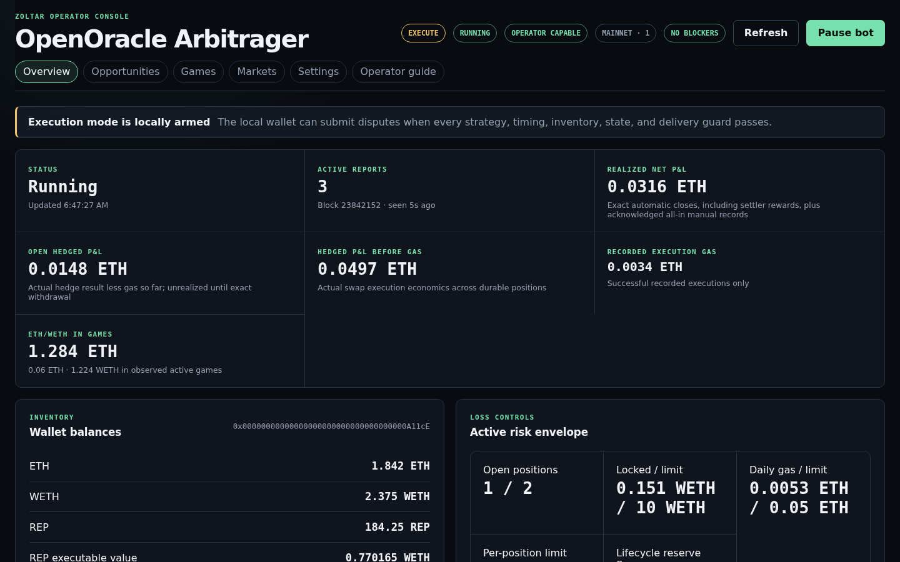
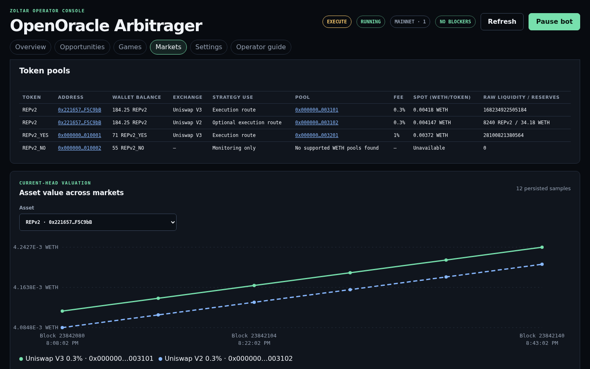

OpenOracle Arbitrager
This operator guide explains how the bot discovers OpenOracle games, compares their exchange rate with onchain liquidity, submits an atomic hedge and dispute, and accounts for the final withdrawal. It covers the operator configuration, local dashboard, strategy math, supported exchanges, durable recovery, and the balances an execution wallet needs.
What the bot does
The bot follows approved OpenOraclePriceCoordinator reports. For each active WETH/token game it loads the exact report state, finds supported pools, compares size-aware Uniswap V2, V3, and hookless V4 hedge quotes when configured, and applies timing, TWAP, inventory, allowance, profitability, and risk limits. Uniswap V3 remains the reference and TWAP anchor. Only the best currently eligible opportunity may be selected.
Execution lifecycleBoth public and private delivery sign a parent-bound executor transaction. A missed target cannot later succeed; after twelve descendants, the configured reader requirement and every available response must agree on missing-receipt evidence before the bot safely expires the entry or retries the lifecycle while continuing to watch the old hash for late revert gas. The primary reader is sufficient by default; quorum 2 requires at least two available readers.
replaced and continues consuming risk until its remaining inventory is reconciled.
Dashboard quick start
The bot accepts no command-line arguments. Copy the paused, initially unconfigured example and run the zero-argument command.
install -d -m 700 .state
install -m 600 config/operator.example.json .state/operator.json
bun run runDirect file editing is an offline workflow. While the bot is running, use the dashboard so validated changes can apply safely at scan boundaries; do not edit the file concurrently with a dashboard save.
Open http://127.0.0.1:4173. The first startup state is Paused. In Chain and RPC connectivity, select a chain profile first, then enter that profile's RPC agreement requirement and read and public RPC endpoints. The default one-reader policy accepts the primary RPC alone; select two readers to require independent corroboration. The bot verifies every endpoint against the selected chain.
Mainnet and Sepolia have separate saved settings and automatically separated history, price-history, and position paths. Changing the Chain selector pauses the bot, saves the current profile, and loads the selected profile in the same running process. Both profiles must keep the same runtime.once, runtime.ui, runtime.uiHost, and runtime.uiPort values so the process mode and dashboard origin remain stable; an incompatible profile is rejected before any file changes. Complete any pending executor-deployment recovery before switching. Keep runtime.execute off for the first rehearsal.
2, configure two additional independent origins; critical evidence then requires at least two available readers, with every available response agreeing exactly.
| Control | Purpose | Operational note |
|---|---|---|
network |
Selects mainnet or sepolia. |
Selects the active profile. Switching profiles pauses the bot and loads that chain's settings and durable paths without a process restart. |
connectivity and deployment.quorumRpcUrls |
Primary and independent execution-state reads. | Live execution requires exact quorum agreement. |
rpcQuorum |
Selects the primary reader alone or two agreeing independent readers. | Defaults to 1 and applies automatically at a scan boundary. |
submission |
Chooses private relay or public mempool delivery. | Both modes send one atomic parent-bound call. |
submission.relayUrls |
Adds a Flashbots-compatible private bundle relay. | Repeat for up to eight; capability and chain checks run first. |
connectivity.publicRpcUrls |
Adds a direct raw-transaction destination. | Every configured endpoint receives the identical signed payload. |
tokenAddresses |
Adds an explicitly reviewed executable token. | Observed but unapproved game tokens remain monitoring-only. |
runtime.lookbackBlocks |
Bounds coordinator-free event discovery to the latest blocks. | 0 disables fallback event discovery; 1–256 scans that many latest blocks, newest first. The exact version 4 default 50000 loads as 256 and is persisted on the next settings save or chain switch; other values above 256 are invalid. Approved-coordinator mode reads current pending reports instead. |
runtime.once |
Runs one bounded scan and exits. | Useful for monitoring and scheduled diagnostics; incompatible with the UI. |
Wallet balances and approvals
Use a dedicated hot wallet that controls no treasury or unrelated protocol assets. The dashboard shows its address, native ETH, WETH, primary REP, configured-token balances, and an estimated executable portfolio value.
- ETH pays entry, lifecycle, setup, failed public transaction, and recovery gas. Keep a buffer above the displayed reserves.
- WETH funds the report contribution and, for a buy-token hedge, the maximum signed Uniswap input.
- Report token funds the token side when required. This may be REPv2, fork REP, or an explicitly configured ERC-20.
- ERC-20 allowances permit the executor to pull exact entry funding. Setup approvals are never bundled with an opportunity.
- OpenOracle internal allowances permit the executor to move the exact WETH and token proceeds for atomic withdrawal.
The UI can accept a private key because the bot must sign unattended transactions. By default, the key is submitted only to the loopback process and is not returned by the API. The README documents the protected-container exception and its network isolation requirements. Persisting the key is an explicit plaintext opt-in; leaving that option off keeps the key in process memory only.
Using the dashboard
Set runtime.ui to true in the operator configuration and start the bot. Overview, Opportunities, Games, Markets, and Settings are separate routes, while the safety bar remains visible on every page. Use it to establish the bot's current mode, run state, operator capability, network, and attention count before acting.

- Confirm the current state in Overview. Read the execution-mode, run-state, capability, network, and attention badges. Running means the dashboard loop is active; only Operator capable means the bot currently has enough verified state to evaluate or execute. Then check block age, wallet inventory, active positions, and the risk envelope. Do not treat a Disconnected badge or a network marked last known as current evidence.
- Inspect the latest scan. Open Opportunities for selected and rejected decisions, Games for report state and timing, and Markets for per-pool prices and liquidity. A reason explains whether an opportunity was uneconomic or blocked by a safety or infrastructure guard.
- Pause before intervening. Select Pause bot before changing execution policy or investigating unexpected behavior. Pausing stops new entries while recovery, settlement, and withdrawal continue for capital already at risk. If polling fails after a known running snapshot, emergency Pause remains available; without a prior snapshot, the control stays locked.
- Follow the attention badge. It routes first to required network setup, then to a recovery-required position, an unknown transaction confirmation, or the current polling error. Preserve the journal and keep the bot paused while you verify the evidence. State reads retry automatically; use Refresh to request an immediate retry after correcting the cause.
- Review before resuming. Use Settings for the focused forms and complete configuration; live settings apply automatically at scan boundaries. Resume remains locked until the dashboard has current state and a configured network. With live execution armed, Resume bot opens a readiness check for the network, signer, recovery positions, unknown confirmations, market evidence, eligible opportunities, and submission mode. Keep the bot paused if any item is unexpected.

How the strategy math works
All contract amounts use integer token units. OpenOracle percentage rates use precision 10,000,000, and fee multiplication floors exactly like Solidity:
OpenOracle feeThe bot does not replace integer rounding with floating-point arithmetic.
The next WETH-side report amount is the current amount multiplied by the game multiplier and capped at escalationHalt. Once the halt has been reached, OpenOracle advances by one attoETH. The token-side amount comes from an executable Uniswap quote at that replacement ratio.
Sell-token direction. The bot receives a size-aware quote for selling the current token amount:
Sell-token hedge P&L before gas The signed minimum-output limit reserves the full configured adverse slippage.
Buy-token direction. The bot requests an exact-output quote for the report token plus both token fees:
Buy-token hedge P&L before gas The signed maximum-input limit rounds upward and is fully funded before entry.
Profit layersQuote-time modeled profit, tracked open hedge economics, and realized net profit answer different questions and are deliberately shown separately.
The conservative selection value is:
Modeled netEvery term is measured in WETH. It must meet both the absolute WETH floor and Pmodeled × 10,000 ≥ Breturn × minimumProfitBps.
For a sell-token hedge, Breturn is the report's WETH contribution plus its WETH fees. For a buy-token hedge it is the exact-output Uniswap quote's required WETH input. Equality passes the threshold; integer comparison occurs in WETH attoETH before display formatting.
For a direct Uniswap V2 WETH/token pair with input reserve Rin, output reserve Rout, and input Ain, the bot applies Router02's 0.30% fee and integer rounding exactly: Aout = floor(997 × Ain × Rout / (1000 × Rin + 997 × Ain)). For exact output it uses Router02's rounded-up inverse. The strategy then compares every configured V2, V3, and V4 executable quote using the same profit, slippage, and gas policy; it never selects a venue from display spot price alone.
- Entry gas reserves
1,200,000 × gas price; private mode replaces the gas amount with the largest successful relay simulation. - The slippage reserve is the complete distance between the quote and the signed Uniswap limit, not merely expected slippage.
-
The lifecycle reserve is the larger of the configured floor and
(callbackGasLimit + 900,000) × gas price. - Open hedged net uses actual executor hedge evidence and gas recorded so far. Realized net adds the exact ETH settler reward emitted by the lifecycle executor and requires exact withdrawal evidence. It closes only when the configured reader requirement returns the same twelfth-descendant finality evidence and every available response agrees. The primary reader is sufficient by default; quorum 2 requires at least two available readers.
Supported exchanges and price charts
| Venue | Network | Monitoring | Execution | Price and liquidity meaning |
|---|---|---|---|---|
| Uniswap V3 | Mainnet and Sepolia | Yes: 0.01%, 0.05%, 0.3%, and 1% WETH/token pools | Yes, through QuoterV2 and the authenticated SwapRouter | Spot WETH/token comes from sqrtPriceX96; liquidity is the raw active-range liquidity() value. |
| Uniswap V2 | Mainnet | Yes | Optional, through an authenticated Router02 when deployment.uniswapV2Router is configured |
Spot WETH/token comes from normalized reserves; both reserves are shown. Execution uses the exact direct-pair 0.30% constant-product quote at the quorum block. |
| SushiSwap V2 | Mainnet | Yes | No | Spot WETH/token comes from normalized reserves; both reserves are shown. |
| Uniswap V4 | Mainnet and Sepolia | Exact size-aware quotes when deployment.uniswapV4PoolManager and deployment.uniswapV4Quoter are configured |
Optional, through an authenticated PoolManager and Quoter for direct hookless native-ETH/token pools | Execution uses exact-input or exact-output V4 Quoter evidence at the quorum block, validates signed PoolManager deltas, and converts native ETH and WETH atomically. Hooked pools are excluded. See V4 pool eligibility in the operator README for the exact pool keys, signs, and amount bound. |
| Centralized exchanges and other DEXs | Any | No | No | No offchain API or unsupported venue participates in opportunity selection. |
The dashboard's historical chart stores one current-head sample per pool and block. Every line therefore represents a concrete exchange pool, not an aggregated token price. The exact-value table lists block, observation time, pool, venue, and WETH-per-token price. These spot samples are for comparison. V2 execution uses exact reserves at the quorum block, V3 execution uses QuoterV2, and V4 execution uses the authenticated V4 Quoter against a hookless pool key; every executable opportunity still requires the V3 spot/TWAP reference guard.
On mainnet, startup discovers REPv2 and instantiated fork REP tokens from Augur universe state. Explicitly configured tokens join the execution allowlist. Tokens seen only in approved reports are displayed for monitoring but cannot trigger a trade, and a token with no supported WETH pool is shown explicitly rather than silently omitted.
Finality and durable recovery
- pending-entry
- open
- withdrawing
- closed-pending-finality
- closed
- open
- withdrawing (replacement credit)
- replaced
A successful lifecycle receipt is provisional. The bot retains its transaction hash, receipt block number and hash, exact withdrawals, gas, and risk slot until the configured reader requirement returns the same receipt and twelfth-descendant finality evidence, with every available response agreeing. The primary reader is sufficient by default. With quorum 2, at least two readers must be available, and a lagging or contradictory reader delays closure; a reader is omitted only for a retryable transport failure.
If a shallow reorganization removes that receipt, provisional gas and withdrawals are rolled back, the old signed hash is archived for late revert monitoring, and the position returns to open for a fresh parent-bound lifecycle attempt. Disagreement between readers keeps finality pending and fails the scan closed. Once the read quorum agrees, evidence that conflicts with the durable journal—such as a missing executor event or assets that cannot be attributed exactly—moves the position to recovery-required and continues consuming the risk limit.
A canonical immediate replacement is handled separately. The bot derives the exact credited token and amount from its durable entry report and the immediate successor, submits one parent-bound exact withdrawal, and waits for the normal twelve-descendant RPC quorum. Success becomes replaced, not closed: the claimed credit is known, but the hedge's remaining one-sided inventory has not been valued or unwound automatically.
Persistent files and operational boundaries
| File | Purpose | Protection |
|---|---|---|
.state/operator.json.state/operator.json.mainnet.profile.state/operator.json.sepolia.profile |
The compatibility file contains the active chain's complete versioned configuration. Private sibling profile files retain Mainnet and Sepolia settings while inactive. Back up all three. Configuration and deployment procedure. | Owner-only; protect integrity as execution policy, and treat as a wallet secret when signer persistence is enabled. |
runtime.positionFile |
Crash-critical hashes, intents, accounting, finality evidence, and manual reconciliation. The example value is .state/positions-mainnet.json. |
Owner-only, synchronized atomic replacement, single-process lock. |
runtime.historyFile |
Confirmed entry history and quote-time tracking. The example value is .state/history-mainnet.jsonl. |
Owner-only append with file and directory synchronization. |
runtime.priceHistoryFile |
Per-block, per-pool spot history shown by the chart. The example value is .state/prices-mainnet.jsonl. |
Keep network-specific; malformed records are skipped with diagnostics. |
The dashboard binds to loopback by default and rejects unexpected Host authorities and cross-origin mutations. The README documents the protected container exception, which binds the container interface while publishing only on host loopback. Do not expose it through a reverse proxy or an untrusted container network without adding authentication and transport security. RPC and relay credentials may remain in the owner-only settings form, but operation logs and endpoint status expose only URL origins.